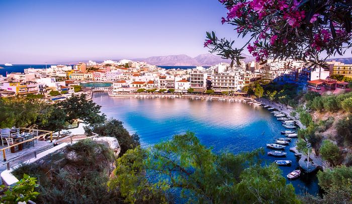

Location
It is the largest island in Greece and the fifth largest in the Mediterranean Sea. The island of Crete is located in the eastern Mediterranean Sea, at the southern tip of the Aegean Sea and not far from the coast of Egypt.
Time
In Crete (Greece), the time difference with Spain is one hour more, that is, when in Spain it is 00.00 hours, in Crete it will be 01.00 hours.
Language
The official language in Crete is Greek.
Places
The capital is administratively divided into four peripheral units: Chania, Rethymno, Heraklion and Lasith. Other places in Crete are: Sitia, Malia, Chersonese, Agios Nikolaos…
Climate
The climate in Crete is mainly Mediterranean. The environment is quite humid and the average temperature is 21ºC in summer and below 0ºC in winter.
Population
Its population is 623 065 inhabitants, almost the same as the total in the rest of the islands of Greece. It has a density of 72 inhabitants per square kilometer.
Capital
Crete is one of the regions in which Greece is divided. The capital is the city of Heraklion.
Currency
The currency of Crete is the euro (EUR)